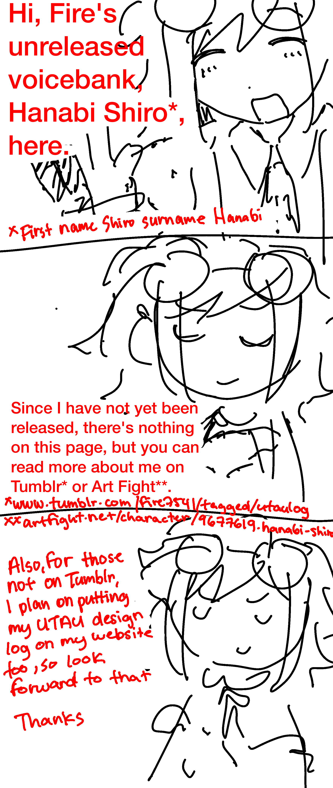

Transcription
First panel: Hi, Fire's unreleased voicebank, Hanabi Shiro*, here.*First name Shiro surname Hanabi
Second panel: Since I have not been released, there's nothing on this page, but you can read more about me on Tumblr* or Art Fight**.
Third panel: Also, for those not on Tumblr, I plan on putting my UTAU design log on my website too, so look forward to that
Thanks